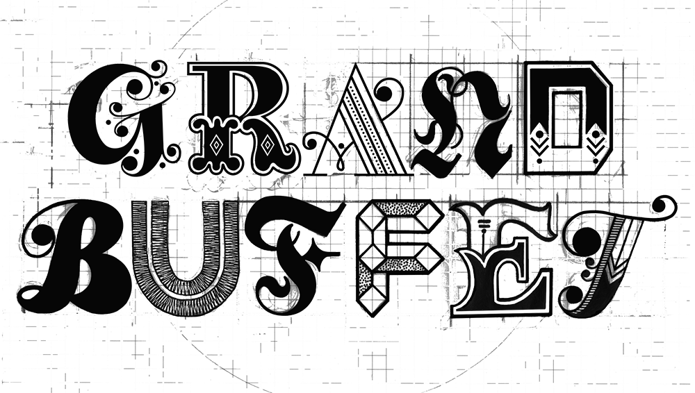

ABOUT
VISUALS
MIC allows for data mining without prejudice. It is a great way to gain inspiration in organizing large sets of data with every aspect, such as brightness and boldness, determining importance of information. The use of simple visualizations reminds me how little changes can effect hierarchy and highlight information that requires it.
Go To PageThis website, though not easy to navigate through the forums, they provide documentation of creative graffiti art throughout different parts of the world and keeps you up-to-date on new styles. As a designer, I often find inspiration browsing through the forums for interesting color schemes and inventive type.
Go To PageLootback provides a search engine for photos, vector images, and videos to use at affordable prices. Best of all, Lootback gives part of their commission from their sales back to you for purchasing through them. Just starting my career in graphic design, I could use this website for clients knowing that I'll get a good price and I'll get cash back.
Go To PageTypeWonder allows you to test a website in a font of your choosing. You just enter the url and preview the website without any hassles. I would utilize this tool with my own websites and testing different fonts on websites for clients. It is a useful tool for updating and creating websites.
Go To PageThis website allows you to resize the web browser your currently using and gives you a realtime size in pixels of the browser. It is a handy tool when creating responsive websites. It is especially handy when trouble shooting a website for a specific size but you cannot easily see the size.
Go To PageThis tool allows you to view any web colors with an easy movement of your cursor. You are immediately shown the hex code which you can then save and compare with other saved colors. It is a great way to compare colors, to find what colors go well together, and to view new colors. A necessary tool for creating anything visual.
Go To Page
Hex Colors allows you to easily convert rgb color codes to hex and vice versa. Additionally, the background color changes to the color you are converting so you can see the color. A very simple, easy to use tool and great for working on websites.
Go To Page
Place It lets you place screen shots of designs directly onto phones, laptops, etc. to easily preview designs and use the photos to promote and market your designs. These images allow viewers to easily make the connection of your design to being in use. Great for a portfolio image when showcasing app designs, websites, etc.
Go To PagePalettes show color palettes that can be used and go well together. You can view a color palette and immediately get a feel for it, deciding if it would work for your design or not. This is a great tool if you need help with deciding on a color scheme or viewing what colors could go with what you already have.
Go To PageThis HTML Periodic Table shows the 107 html elements currently in the HTML5 working draft. They are color coded with a key which allows you to better understand their role and how you can best utilize html elements.
Go To PageWeb Colour Data gives you a comprehensive overview of a website's color scheme including a breakdown of the colors with their hex codes, hue distribution, color wheel, and websites with similar colors. The data is presented in an effective and organized manner easy for any viewer to understand.
Go To PageCSSMATIC is a great tool for web designers. It provides tools like a gradient generator, border radius, noise texture, and box shadow for simple and easy styling and making sure all the details and every aspect of a website is a well thought design. I hope to use these little touches to enhance my own web designs.
Go To PageCSS3 Patterns Gallery has great seamless patterns to use created with CSS. These patterns can come in handy when creating a website that needs a fast load time so a background image does not have to be loaded.
Go To PageCSS beautifier automatically formats your css so that it is consistent and easy to read. You just paste, pick your settings, and then it shows you the adjusted CSS.
Go To PageA responsive jQuery image slider with great visual effects and professional made templates makes beautiful image galleries. They have a selection of attractive slider buttons so they do not take away from the images and gives you many styling options.
Go To Page


{kind=link}
{kind=link}
{kind=link}
{kind=link}
{kind=link}
{kind=link}